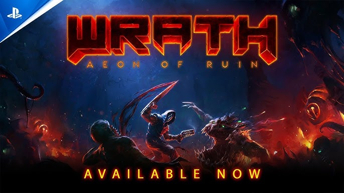
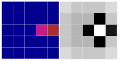
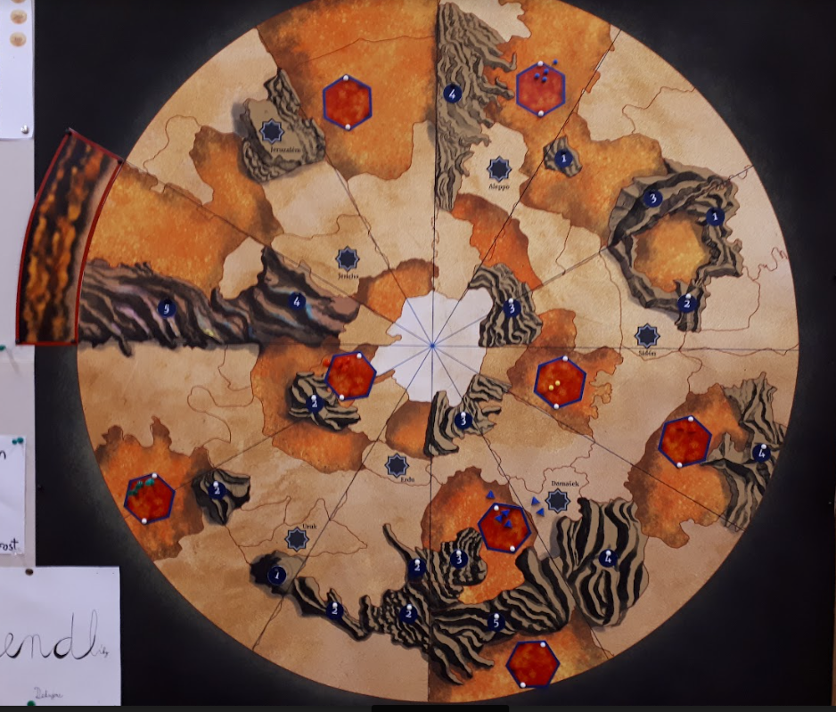
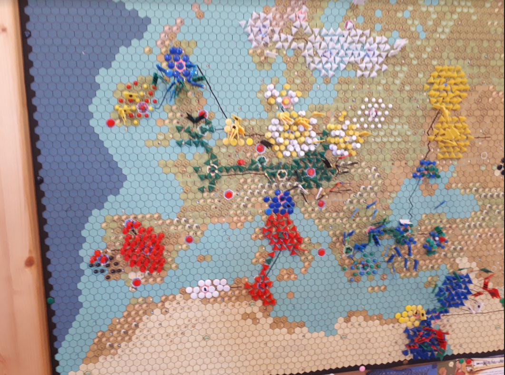
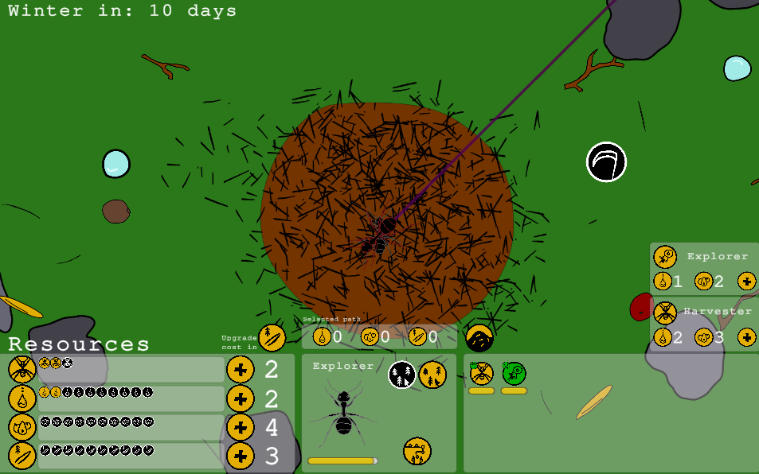
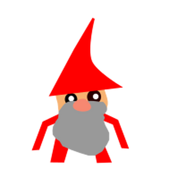
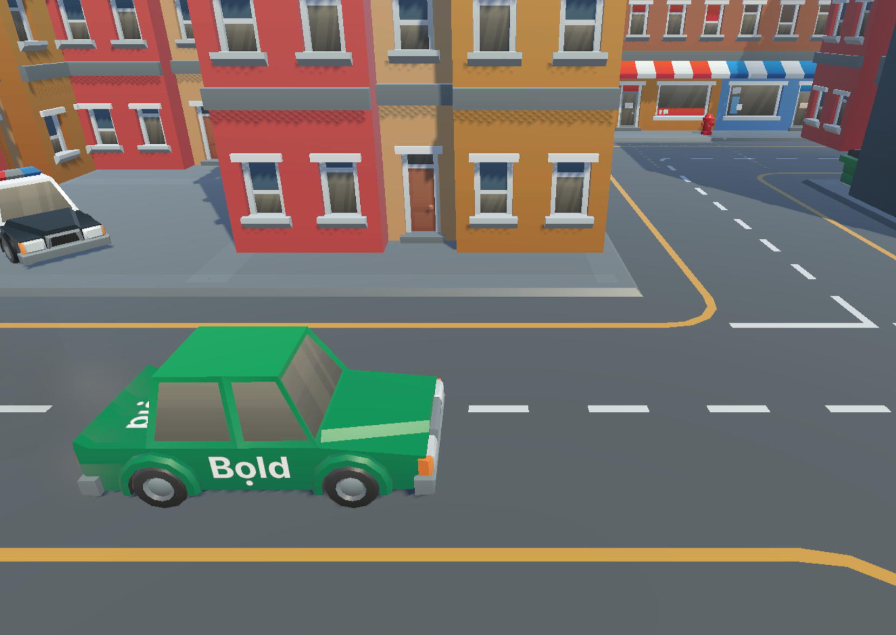

Game developer with a Computer Science background from Charles University (game development track)
and 2+ years of professional experience at Flying Rat Studio. Shipped titles on PS4, PS5, PS VR2,
Xbox One, Xbox Series X|S, and Nintendo Switch. Fluent in both Unity/C# and Unreal Engine/C++.
Passionate about creative problem-solving, connecting the virtual and real world, and building
games that are genuinely fun.
Vývojář her s informatickým vzděláním (MFF UK, specializace vývoj počítačových her) a více než
2 lety profesionálních zkušeností ve Flying Rat Studio. Podílel jsem se na vydání her pro PS4,
PS5, PS VR2, Xbox One, Xbox Series X|S a Nintendo Switch. Pracuji v Unity/C# i Unreal Engine/C++.
Zajímám se o kreativní řešení problémů, herní design a tvorbu zážitků, které propojují reálný
a virtuální svět.
Career & Education
Kariéra a vzdělání
present
2025
nyní
2025
Travelling & Independent Development
Cestování a samostatný vývoj
2 months in Sydney, Australia · 2 months in Thailand — working remotely on two independent app projects.
2 měsíce v Sydney, Austrálie · 2 měsíce v Thajsku — práce na dvou samostatných aplikačních projektech.

Step by Step App — WIP
Flutter · Dart · FlutterFlow · Early development
Flutter · Dart · FlutterFlow · Raná fáze vývoje
Czech language learning app for foreigners, tied to the successful Step by Step textbook series. Same technology stack as the Reflex Locomotion app. Design by Vojtěch Pinc.
Aplikace pro výuku češtiny pro cizince, navázaná na úspěšnou učebnicovou řadu Step by Step. Stejný technologický základ jako Reflex Locomotion app. Design: Vojtěch Pinc.
FlutterDartFlutterFlow
The Step by Step textbook series is widely used across Europe for teaching Czech to adult foreigners. The app follows the same curriculum structure, providing audio, vocabulary exercises, and grammar guides alongside the book. Built in FlutterFlow for rapid iteration, with a clean Flutter/Dart export path for full customisation. Design by Vojtěch Pinc.
Učebnicová řada Step by Step je hojně využívána v Evropě pro výuku češtiny dospělým cizincům. Aplikace kopíruje strukturu učebnice — nabízí audio, slovníčky a gramatiku. Stavěná ve FlutterFlow s exportem do čistého Flutter projektu. Design: Vojtěch Pinc.
▶

Reflex Locomotion App — nearly finished
Aplikace Reflex Locomotion — téměř hotovo
Flutter · Dart · FlutterFlow · ETA 2026
Flutter · Dart · FlutterFlow · Dokončení v roce 2026
Medical rehabilitation app for Rehabilitace Karlovy Vary s.r.o., guiding users through the Vojta Method (reflex locomotion therapy). Multi-language support. Built with FlutterFlow for rapid UI development, with full Flutter/Dart export. Design by Vojtěch Pinc.
Rehabilitační aplikace pro Rehabilitace Karlovy Vary s.r.o. zaměřená na Vojtovu metodu reflexní lokomoce. Vícejazyčná podpora. Stavěná ve FlutterFlow s možností exportu do čistého Flutter projektu. Design: Vojtěch Pinc.
FlutterDartFlutterFlowMedicalMedicína
The Vojta Method (reflex locomotion therapy) is a neurophysiological treatment for patients with motor system disorders — cerebral palsy, scoliosis, post-stroke recovery. The app guides both practitioners and patients through the full therapy sequence with visual aids, step-by-step instructions, and multi-language support. Commissioned by Rehabilitace Karlovy Vary s.r.o. Design by Vojtěch Pinc.
Vojtova metoda reflexní lokomoce je neurofyziologická léčebná metoda pro pacienty s poruchami motorického systému — mozková obrna, skolióza, rekonvalescence po mrtvici. Aplikace provádí terapeuty i pacienty celou sekvencí cviků s vizuálními pomůckami a vícejazyčnou podporou. Objednáno Rehabilitací Karlovy Vary s.r.o. Design: Vojtěch Pinc.
▶
2025
2023
Technology-focused studio specialising in console porting, optimisation, and advanced feature development.
Technologicky zaměřené studio specializující se na portaci her na konzole, optimalizace a vývoj pokročilých funkcí.

Internal studio game built in Unreal Engine. Implemented gameplay features in C++ and Blueprints, authored behaviour trees, integrated audio (SFX hooks), and performed general debugging.
Interní projekt studia v Unreal Engine. Implementace herních mechanik v C++ a Blueprintech, tvorba stromů chování (Behaviour Trees), integrace zvukových efektů a ladění chyb.
Unreal EngineC++BlueprintsBehaviour Trees
My first real Unreal Engine project. I worked in both C++ and Blueprints — implementing gameplay systems, authoring behaviour trees for AI, hooking up sound effects at the code level, and performing general debugging across the codebase. The project will be released publicly in the future.
Můj první skutečný projekt v Unreal Enginu. Pracoval jsem v C++ i Blueprintech — implementace herních systémů, tvorba stromů chování pro AI, napojení zvukových efektů na úrovni kódu a obecné ladění chyb v kódu. Projekt bude v budoucnu veřejně vydán.
▶

Part of the Flying Rat team responsible for the PS VR2 port of the world's best-selling VR game. Later moved to performance optimisations, tool creation, and general bug fixing across the codebase.
Součást týmu zodpovědného za port nejprodávanější VR hry na PS VR2. Následně přechod na výkonnostní optimalizace, tvorbu nástrojů a obecné opravy chyb v kódu.
UnityC#PS VR2OptimisationOptimalizace
Beat Saber is the world's most popular VR game. I was part of the Flying Rat team that delivered the PS VR2 port — working on platform-specific VR input mapping, performance profiling, and ensuring the build met Sony's certification requirements. After the port shipped, the collaboration continued: performance optimisations, internal tooling, and general bug fixing across the codebase.
Beat Saber je nejpopulárnější VR hra světa. Byl jsem součástí týmu Flying Rat zodpovědného za port na PS VR2 — mapování VR ovladačů, výkonnostní profilování a plnění Sonyho certifikačních požadavků. Po vydání portu spolupráce pokračovala: optimalizace výkonu, interní nástroje a obecné opravy chyb.
Trailer ↗
▶

Ported a boomer shooter from the DarkPlaces engine to Unity, targeting PS4, PS5, Xbox One, Xbox Series X|S, and Nintendo Switch. Responsible for gameplay features, UI implementation, and console-specific bug fixing.
Port boomer shooteru z engine DarkPlaces do Unity pro PS4, PS5, Xbox One, Xbox Series X|S a Nintendo Switch. Implementace herních a UI funkcí, opravy chyb specifických pro konzole.
UnityC#PS4/PS5XboxNintendo Switch
Wrath was originally built in DarkPlaces — a Quake engine derivative. The port involved reconstructing the game in Unity from scratch, preserving the feel of the original weapons, movement, and enemy behaviour. My work covered implementing gameplay and UI features and fixing platform-specific bugs across five console targets, each with their own certification requirements.
Wrath byl původně postaven v DarkPlaces — derivátu Quake enginu. Port zahrnoval rekonstrukci hry v Unity od základů se zachováním pocitu ze zbraní, pohybu a chování nepřátel. Moje práce zahrnovala implementaci herních a UI funkcí a opravy chyb specifických pro pět konzolových platforem, každou s vlastními certifikačními požadavky.
Trailer ↗
▶
2023
2019
Charles University — Faculty of Mathematics and Physics
Matematicko-fyzikální fakulta Univerzity Karlovy
BSc Computer Science · Game Development track · Unfinished
Bc. Informatika – Vývoj počítačových her · Nedokončeno
Relevant courses:
Výběr absolvovaných předmětů:
Programming 1 (Python)
Programování 1 (Python)
Programming 2 (C#)
Programování 2 (C#)
Programming in C#
Programování v C#
Advanced Programming in C#
Pokročilé programování v C#
Programming in C++
Programování v C++
Advanced Programming in C++
Pokročilé programování v C++
Intro to Game Development (Unity)
Základy vývoje počítačových her (Unity)
Game Mechanics Programming (Godot)
Programování herních mechanik (Godot)
Introduction to Game Design
Úvod do herního designu
Computer Graphics Fundamentals
Základy počítačové grafiky
Algorithms & Data Structures 1 & 2
Algoritmy a datové struktury 1 & 2
Practical Game Jam course ×4
Praktikum z vývoje her (Game Jam) ×4
Projects:
Projekty:

Commander-based RTS played in a real park. The commander's in-game position is linked to the player's GPS location. Designer, project lead, and programmer. Came with a full trailer.
Commander-based RTS hrané v reálném parku — pozice velitele odpovídá GPS souřadnicím. Designer, projektový vedoucí a programátor. Hra má plnohodnotný trailer.
UnityC#GPSMultiplayer
Players first meet in a park, draw the arena boundaries together, then play a simple commander-based RTS where each commander's position is synced to their real GPS coordinates — blending the physical world with the game map. I was responsible for the game design, project leadership, and parts of the programming. The game shipped with a full gameplay trailer.
Hráči se sejdou v parku, společně nakreslí hranice arény a pak hrají commander-based RTS, kde pozice velitele odpovídá skutečným GPS souřadnicím — propojení fyzického světa s herní mapou. Byl jsem zodpovědný za herní design, vedení projektu a část programování. Hra má plnohodnotný trailer i gameplay video.
Trailer ↗Trailer ↗
Gameplay ↗Gameplay ↗
▶

Cooperative LAN mobile game for Android inspired by Space Alert. Players move physically between NFC-tagged rooms to operate a spaceship. Custom NFC–Unity integration documented in a public post.
Kooperativní LAN mobilní hra pro Android inspirovaná Space Alertem. Hráči se fyzicky přesouvají mezi místnostmi s NFC tagy. Vlastní NFC–Unity integrace zdokumentovaná ve veřejném příspěvku.
UnityC#AndroidNFC
This project was intended to be my bachelor's thesis — I finished the game but started working at Flying Rat Studio before completing the write-up. The game is split into 10-minute missions where the ship is attacked by enemies and players must use the spaceship's equipment to survive. Moving between rooms requires scanning a physical NFC tag placed in that room, connecting the real world with the virtual one. Connecting NFC and Unity was unexpectedly complex — I ended up writing a public post documenting exactly how I did it.
Tento projekt měl být mou bakalářskou prací — hru jsem dokončil, ale začal jsem pracovat ve Flying Rat Studio dřív, než jsem stihl napsat text práce. Hra se hraje v 10minutových misích, kde loď napadají nepřátelé a hráči musí pomocí vybavení lodi přežít. Přechod mezi místnostmi vyžaduje naskenování fyzického NFC tagu — propojení reálného světa s virtuálním. Napojení NFC a Unity bylo překvapivě složité, nakonec jsem napsal vlastní příspěvek popisující, jak jsem to udělal.
▶

Custom PacMan with progressive difficulty and authentic ghost behaviours. SFML provides only bare-bones rendering, so all animation systems and text rendering were written from scratch. Includes a mouse-driven map editor with auto-connecting pipes.
Vlastní PacMan s narůstající obtížností a autentickým chováním duchů. SFML je velmi základní, bylo potřeba napsat vlastní animace, vykreslování a výpis textu. Obsahuje editor map s automatickým napojením trubek.
C++SFML
SFML gives you a window and a sprite batcher — nothing else. I had to build a full animation state machine, a bitmap font renderer (with variable-width character support), and a particle system for the death animations all from scratch. The four ghosts each implement the original Pac-Man AI: Blinky directly chases the player, Pinky targets four tiles ahead of the player's direction, Inky uses a combination of Blinky's position and the player to pick an ambush tile, and Clyde alternates between chasing and retreating to his corner. All four shift between scatter and chase phases on a global timer. The map editor draws the maze with mouse drag and auto-connects pipe segments so they always form a closed, valid playfield.
SFML dává jen okno a sprite renderer — nic jiného. Musel jsem od základů napsat animační stavový automat, renderer bitmapového fontu (s podporou různých šířek znaků) a částicový systém pro animace smrti. Čtyři duchové implementují originální Pac-Man AI: Blinky přímo pronásleduje hráče, Pinky míří čtyři dlaždice před hráčem, Inky kombinuje pozici Blinkyho s hráčem pro zálohu, a Clyde střídá pronásledování a ústup do svého rohu. Všichni čtyři se přepínají mezi fázemi rozptylu a pronásledování na globálním časovači. Editor map kreslí bludiště tažením myši a automaticky propojuje segmenty trubek do uzavřeného platného hřiště.
▶

Two versions: a Python console game with adjustable-difficulty AI, then a full C# WinForms version with free-form ship placement and a heatmap-based AI that scores every tile by remaining ship configurations.
Dvě verze: konzolová Python hra s nastavitelnou AI, a C# WinForms verze s libovolnými tvary lodí a heatmap AI, která hodnotí políčka podle zbývajících lodí.
PythonC#WinForms
The heatmap AI maintains a probability grid that updates after every shot. For each unsunk ship it enumerates every position where that ship could still legally fit — horizontally and vertically — given all known hits and misses. Each candidate position adds weight to the tiles it covers. The AI then fires at the tile with the highest accumulated weight. In hunt mode (no active hit streak) this naturally clusters shots around statistically dense areas; once a hit is scored it switches to target mode and the distribution collapses tightly around the wound. Ships in the C# version can be placed in any contiguous non-overlapping shape, not just straight lines — the AI's enumeration handles arbitrary polygons.
Heatmap AI udržuje pravděpodobnostní mřížku, která se aktualizuje po každém výstřelu. Pro každou nepotopenu loď vyjmenovává všechny pozice, kde by loď ještě mohla platně být — horizontálně i vertikálně — s ohledem na všechny známé zásahy a minutí. Každá kandidátní pozice přidává váhu dlaždici, které překrývá. AI pak střílí na dlaždici s nejvyšší naakumulovanou váhou. V režimu hledání se výstřely přirozeně soustředí do statisticky hustých oblastí; po zásahu se přepne do cílového režimu a distribuce se úzce soustředí kolem rány. Lodě v C# verzi lze umístit do libovolného sousedního nepřekrývajícího se tvaru, nejen přímky — výčet AI zvládá libovolné polygony.
▶
2019
2011
Gymnázium Joachima Barranda, Beroun · Volunteer at YMCA Braník
High school
Střední škola
Maturita: Mathematics (state & school), Mathematics+, Computer Science, Czech Language
Maturita: Matematika (státní & školní), Matematika+, Informatika, Český jazyk
Volunteer counsellor at YMCA Braník · Lead camp organiser since 2022
Dobrovolný vedoucí YMCA Braník · Hlavní vedoucí tábora Pecka od 2022
Since age 15 I have volunteered at summer camps and at weekly meetings with youth. I regularly designed and ran small games — something new every Friday. Over the years I also created several larger long-running experiences: two multi-year board game campaigns played round by round at weekly meetings, and a large hex-tile final game for one of our summer camps. In 2022–2023 I served as lead organiser of Camp Pecka.
Od 15 let se věnuji práci s dětmi na schůzkách a táborech. Pravidelně jsem navrhoval a vedl nové hry — každý pátek něco jiného. Postupem času jsem vytvořil i několik větších celoročních projektů: dvě celoroční deskohry hrané po krocích na schůzkách a velkou závěrečnou hru jednoho z táborů. V letech 2022–2023 jsem působil jako hlavní vedoucí tábora Pecka.

Inspired by the 1970s Dune board game. Players harvest spice on contested hexagons while a weekly storm destroys everything in its path. Conflict is central — combat is resolved using a system inspired by "878 Vikings: Invasions of England," where troops may choose to flee instead of fighting, saving their lives at the cost of the battle.
Inspirováno deskovou hrou Duna z 70. let. Hráči těží koření na sporných hexagonech, verbují a přesouvají armády. Každý týden se hýbe bouře a ničí vše ve své cestě. Soubojový systém vychází ze hry „878 Vikings" — jednotky mohou místo útoku utéct.
Game DesignHerní designHex StrategyHexová strategie
The board is a circular hex map — regions closer to the centre are richer in spice but harder to hold, while the outer ring is safer but poorer. Every Friday the storm advances clockwise by a fixed number of hexes, destroying all spice and all units caught in its path. This created a constant rhythm: harvest fast, move out, watch the storm. Recruitment happened through a simple economy of spice-to-troops, which meant every battle was a real investment. The flee mechanic from "878 Vikings" let a losing player salvage part of their army rather than lose everything — which kept people emotionally attached to the game even through bad weeks.
Hrací plocha je kruhová hexová mapa — oblasti blíže středu jsou bohatší na koření, ale těžší na udržení, zatímco vnější prstenec je bezpečnější, ale chudší. Každý pátek bouře postoupí po směru hodinových ručiček o pevný počet hexagonů a zničí vše koření i jednotky ve své cestě. Vznikl tak stálý rytmus: rychle těžit, přesunout se, sledovat bouři. Nábor probíhal přes jednoduchou ekonomiku koření-za-vojáky, takže každá bitva byla skutečnou investicí. Mechanismus útěku ze hry „878 Vikings" umožnil prohránému hráči zachránit část armády místo ztráty všeho — díky tomu zůstali hráči emotivně zapojeni do hry i v těžkých týdnech.
▶

Civilisation V-style strategy played on a physical wall map made with a Civilization V map builder. Players earned points at weekly meetings and spent them colonising territory, building cities, raising armies, and collecting rare resource sets. Deliberately designed to create intrigue while keeping direct conflict limited. Ran every Friday for nearly two years.
Strategická hra na nástěnce s mapou z map builderu Civilizace V. Hráči za body ze schůzek budovali města, rozšiřovali území, stavěli armády a sbírali kolekce vzácných surovin. Designovaná záměrně tak, aby docházelo ke konfliktům, ale omezeně. Hra běžela každý pátek téměř 2 roky.
Game DesignHerní designStrategyStrategie
The map was exported from the Civilization V map editor, printed large, and pinned to a corkboard on the wall. Every Friday meeting, players earned a small amount of points just for attending, then spent them on actions: claiming unclaimed land, founding cities, building military units, or buying rare resources. Resources came in several types and were worth points only as complete sets — which pushed players toward trading and deal-making rather than hoarding. Military conquest was intentionally expensive and slow, so wars tended to be short and targeted rather than total. The longest-running power struggle involved a player who had quietly surrounded a rival's core territory over months and then called in a third party to finish them off. Over two years the map changed beyond recognition several times.
Mapa byla exportována z editoru map Civilizace V, vytištěna ve velkém formátu a připnuta na korek na stěně. Každý pátek hráči dostali malé množství bodů jen za účast a pak je utráceli za akce: zabírání volné půdy, zakládání měst, budování vojenských jednotek nebo nákup vzácných surovin. Suroviny přicházely v několika typech a přinášely body jen jako kompletní sety — což hráče tlačilo ke směně a vyjednávání spíše než ke hromadění. Vojenské dobývání bylo záměrně drahé a pomalé, takže války bývaly krátké a cílené spíše než totální. Nejdéle trvající mocenský boj zahrnoval hráče, který si tiše obklíčil jádrové území soupeře po dobu měsíců a pak přivolal třetí stranu k dokončení. Za dva roky se mapa několikrát změnila k nepoznání.
▶

Large-scale hex-tile capture game for a full camp. Teams received time-limited task cards gradually released throughout the day — completing them earned captures, defences, or attacks on the shared map. Scoring rewarded formations and encirclements, forcing real-time prioritisation under time pressure.
Dobývání hexagonů na mapě pomocí úkolových karet uvolňovaných postupně s omezenou dobou platnosti. Body za formace a obkličování. Týmy musely v reálném čase prioritizovat úkoly.
Game DesignHerní designCo-designed with Vojtěch Pinc & Tadeáš FriedrichSpolupráce s Vojtěchem Pincem & Tadeášem Friedrichem
The game ran across the entire camp day. Each team had a faction on a shared hex map and received batches of physical task cards at set intervals — each card had a short physical or knowledge challenge printed on it, a point value, and an expiry time. Completing a card before it expired earned a map action: claim an empty hex, reinforce a border, or attack an adjacent enemy hex. Scoring rewarded contiguous territory, bonus points for encircling an opponent's region entirely. This pushed teams to think several moves ahead and negotiate with neighbours rather than just racing to fill space. We deliberately paused card distribution during lunch — except for one card that read "go eat and rest." The lunch card was worth zero points but counted as a completed task. It was the most popular card of the day.
Hra probíhala celý táborový den. Každý tým měl frakci na společné hexové mapě a dostával dávky fyzických úkolových karet v pravidelných intervalech — každá karta měla vytištěnou krátkou fyzickou nebo znalostní výzvu, bodovou hodnotu a dobu platnosti. Splnění karty před vypršením přineslo akci na mapě: zabrat prázdný hex, posílit hranici nebo zaútočit na sousední nepřátelský hex. Bodování odměňovalo souvislé území a bonusové body za úplné obklíčení soupeřovy oblasti. To tlačilo týmy přemýšlet několik tahů dopředu a vyjednávat se sousedy místo pouhého závodení o prostor. Během oběda jsme záměrně pozastavili vydávání karet — kromě jedné, na které stálo „jdi jíst a odpočívat". Obědová karta měla nulovou hodnotu, ale počítala se jako splněný úkol. Byla nejoblíbenější kartou dne.
▶
Notable Projects
Vybrané projekty
Space Alert IRL
C#, Unity · Android · NFC · LAN Multiplayer
C#, Unity · Android · NFC · LAN Multiplayer
Cooperative multiplayer mobile game (LAN) inspired by the Space Alert board game. Players physically move between NFC-tagged rooms spread across the play area to operate a spaceship under attack. Built a custom NFC–Unity bridge and published a write-up on the integration.
Kooperativní multiplayerová mobilní hra (LAN) inspirovaná deskovou hrou Space Alert. Hráči se fyzicky přesouvají mezi místnostmi označenými NFC tagy rozmístěnými po herní ploše. Napsal jsem vlastní NFC–Unity most a publikoval návod.
UnityC#AndroidNFC
Park Game
C#, Unity · GPS · Team of 5
C#, Unity · GPS · Tým 5 lidí
Multiplayer commander-based RTS played in a real park. Players first meet and draw the arena, then command units while their commander position is linked to their real GPS coordinates. Designer, project lead, and programmer.
Multiplayerové commander-based RTS hrané v reálném parku. Hráči se sejdou, nakreslí arénu a pak hrají — pozice velitele odpovídá GPS souřadnicím hráče. Designer, projektový vedoucí a programátor.
UnityC#GPSMultiplayer
Watch trailer ↗
Trailer ↗
Gnome Trouble
Unity · GDS Prague Game Jam 2024 · 3rd place / 50 entries
Unity · GDS Prague Game Jam 2024 · 3. místo z 50 her
Genre-switching platformer: the first half plays as a 2D Mario-style side-scroller where you throw gnomes off a cliff — then mid-game the perspective and genre switch entirely into a top-down 3D Octopath Traveler-style RPG where you must go apologise to them.
Plošinovka, která se v půlce hry přepne do jiného žánru. První půlka je 2D Mario-style, kde hráč shazuje trpaslíky ze skály — druhá půlka přejde na top-down 3D styl Octopath Traveler, kde musí jít a omluvit se jim.
UnityGame Jam🥉 3rd Place
Play on itch.io ↗
Hrát na itch.io ↗
Game Jams — 8 participations
Game Jamy — 8 účastí
Gnome Trouble
GDS Prague Game Jam 2024 · 🥉 3rd / 50
2D platformer that switches genre to top-down 3D RPG at the midpoint.
2D plošinovka, která se uprostřed přepne do top-down 3D RPG.
itch.io ↗

∆ntHill
LUDUM Dare 2023 · Theme: Harvest
LUDUM Dare 2023 · Téma: Harvest
Anthill management — deploy scouts and harvesters, upgrade the colony.
Správa mraveniště — posílej průzkumníky a sběrače, rozšiřuj kolonii.
itch.io ↗

The Dwarves Delved Too Diligently
Spring Game Jam @ Matfyz 2023
Spring Game Jam @ Matfyz 2023
Grid mining puzzle — regulations pile up after every level.
Těžební puzzle na mřížce — po každém levelu přibývají nařízení.
itch.io ↗

Clumsy Dwarves
GAMEDEV CUNI JAM 2022 · Theme: YOLO
GAMEDEV CUNI JAM 2022 · Téma: YOLO
First Unity project. Factory comedy — dwarves die from old age, stupidity, or boxes.
Mé první Unity. Tovární komedie — trpaslíci umírají stářím, hloupostí nebo bednou.
itch.io ↗

Bear Breakout: 25D Glass Conundrum
FlyingRat GameJam 2024 · Theme: Fragile
FlyingRat GameJam 2024 · Téma: Fragile
Local co-op for 2 — carry a fragile glass panel across the level.
Lokální co-op pro 2 — přeneste skleněný panel přes level bez rozbití.
itch.io ↗

Bold Drive
GDS Prague Game Jam 2025 · Theme: Fortune favours the bold
GDS Prague Game Jam 2025 · Téma: Fortune favours the bold
You're a "Bold" driver (wordplay on Bolt taxis) — drive and chat with passengers.
Jsi řidič „Bold" (slovní hříčka na Bolt) — vezíš zákazníky a chatíš s nimi.
itch.io ↗
Summer Camps & Volunteer Work
Tábory a dobrovolnictví
Summer Camp Lead Organiser — Camp Pecka, YMCA Braník
Hlavní vedoucí tábora Pecka — YMCA Braník
Lead organiser since 2022 · Volunteer since age 15 (2015–present)
Hlavní vedoucí od 2022 · Vedoucí od 15 let (2015–dosud)
Since age 15 I have volunteered at summer camps and weekly youth meetings. Over the years I prepared countless small games (designing and running something new every Friday), and several larger long-running experiences. Below are the two multi-year board game projects and the large final game of one of our camps.
Od 15 let se věnuji práci s dětmi na schůzkách a táborech. Každý pátek jsem připravoval novou hru a spolupodílel se na několika větších celoročních projektech. Níže jsou dvě celoroční hry a velká závěrečná táborová hra.
Legend · ~2 yearsroky
Ongoing weekly board game experience
Celoroční hra na schůzkách
Civilisation V-style strategy played on a physical wall map made with a Civilization V map builder. Players earned points at weekly meetings and spent them colonising territory, building cities, raising armies, and collecting rare resource sets. Deliberately designed to create intrigue while keeping direct conflict limited. Ran every Friday for nearly two years.
Strategická hra na nástěnce s mapou z map builderu Civilizace V. Hráči za body ze schůzek budovali města, rozšiřovali území, stavěli armády a sbírali kolekce vzácných surovin. Designovaná záměrně tak, aby docházelo ke konfliktům, ale omezeně. Hra běžela každý pátek téměř 2 roky.
Dune · ~1 yearrok
Ongoing weekly board game experience
Celoroční hra na schůzkách
Inspired by the 1970s Dune board game. Players harvest spice on contested hexagons while a weekly storm destroys everything in its path. Conflict is central — combat is resolved using a system inspired by "878 Vikings: Invasions of England," where troops may choose to flee instead of fighting, saving their lives at the cost of the battle.
Inspirováno deskovou hrou Duna z 70. let. Hráči těží koření na sporných hexagonech, verbují a přesouvají armády. Každý týden se hýbe bouře a ničí vše ve své cestě. Soubojový systém vychází ze hry „878 Vikings" — jednotky mohou místo útoku utéct.
Prince Caspian — Grand Final Camp Game
Velká závěrečná táborová hra na motivy Prince Kaspiana
Summer camp 2019 · Co-designed with Vojtěch Pinc & Tadeáš Friedrich
Tábor 2019 · Spolupráce s Vojtěchem Pincem & Tadeášem Friedrichem
Large-scale hex-tile capture game for a full camp. Teams received time-limited task cards gradually released throughout the day — completing them earned captures, defences, or attacks on the shared map. Scoring rewarded formations and encirclements, forcing real-time prioritisation under time pressure. We even stopped issuing cards during lunch — except one card that told the kids to go eat and rest.
Dobývání hexagonů na mapě pomocí úkolových karet uvolňovaných postupně s omezenou dobou platnosti. Body za formace a obkličování. Týmy musely v reálném čase prioritizovat úkoly. V době oběda jsme přestali vydávat kartičky — až na jednu, na které bylo, ať děti jdou jíst a odpočívat.